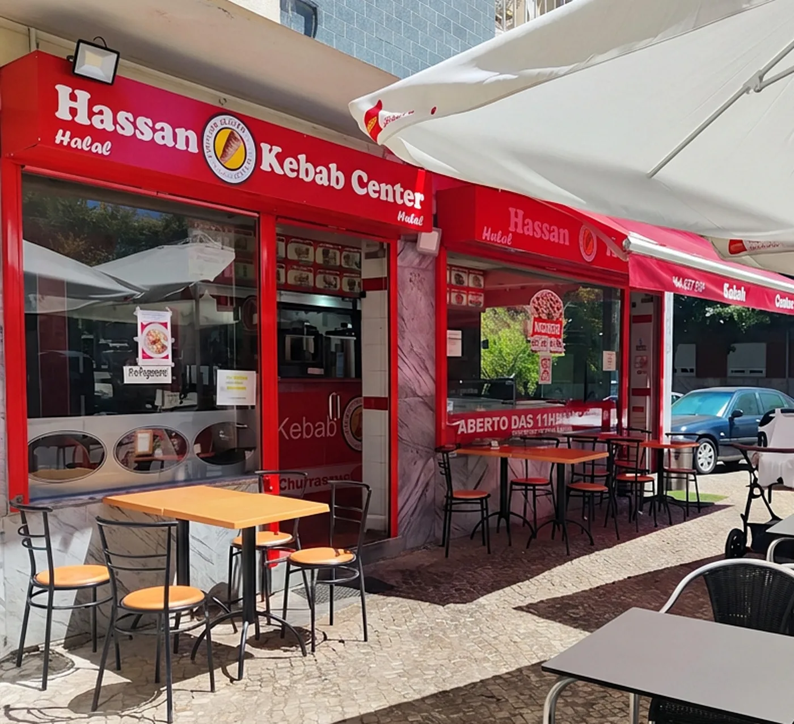

Doner kebab
Kebab servido em pão.
A confirmarLaranjeiro · Almada
Kebabs e frango grelhado no Hassan Kebab Center.
01 / A casa
No Laranjeiro, sabe bem fazer uma pausa para um kebab ou um prato de frango grelhado. Senta-te na esplanada ou leva a refeição contigo.
Vê onde estamos03 / Quem já provou
3,9 de 5 · 231 críticas no Google
“The food here is very tasty; I especially enjoyed the grilled chicken, which was yummy, juicy, and flavorful.”“Excellent chicken and very good and quick attention with cheep prices…”
LaranjeiroR. Dom Manuel I · AlmadaAbrir no Google Maps